Speakers
Lance Albertson is the Director for the Oregon State University Open Source Lab (OSUOSL) and has been involved with many open source projects since 2003. The OSUOSL provides hosting for more than 160 projects, including those of worldwide leaders like Debian Linux, the Linux Foundation and AlmaLinux. The most active organization of its kind, the OSUOSL offers world-class hosting services, professional software development and on-the-ground training for promising students interested in open...
Software Engineer specializing in the integration of hardware and software at the lowest levels utilizing Open Source tools, bootloaders, and operating systems such as Linux to rapidly produce quality products. Past product developments have included the TCSX-1 thin client for Advantage Business Computer Systems, the M5900 handheld for American Microsystems Ltd., the PandaBoard for Texas Instruments, and the MinnowBoard Max for Intel.
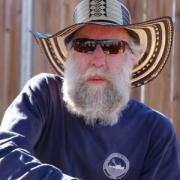
Steve is a local (Central Coast) open source developer, engineering consultant, and educator, with expertise in open source hardware, software, development/process solutions, system architecture & cybersecurity, education/training, business process, community development (maker/hacker/DIY/etc), and applied earth science. Steve has a graduate degree in geophysics, is currently Principal Scientist at Vanguard Computer Technology Labs and former Allan Hancock Assoc. Faculty, and has worked...
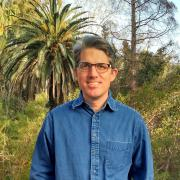
Cody Ashe-McNalley has progressed from newbie to capable programmer and sysadmin as slowly as possible to savour every aspect of technology, from C to SQL, ext2 to Ceph, 10BT to 10Gbps, bash to Chef. SCALE has proven his annual pilgrimage to take part in the FOSS community. Implementing what he learns each year has allowed him to scale scientific research data systems at UCLA and USC from a few hundred gigabytes on one server to a petabyte system with users around the world.

Jono Bacon is a leading community manager, speaker, author, and podcaster. He is the founder of Jono Bacon Consulting which provides community strategy/execution, developer workflow, and other services. He also previously served as director of community at GitHub, Canonical, XPRIZE, OpenAdvantage, and consulted and advised a range of organizations including Huawei, GitLab, Sony Mobile, Deutsche Bank, HackerOne, and others. He is the author of the critically-acclaimed The Art of Community, is...
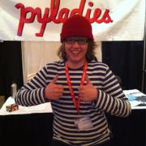
Philip Ballew is an active Open Source advocate in the greater Open Source community. Philip is currently heavily involved in the Ubuntu project, and he spends most of his time contributing to this project. When Philip is not contributing to Open Source, he can be found riding his bike, dancing badly, or attempting to pass his college classes.
Philip Ballew's blog
Tarus Balog has been involved in managing communications networks professionally since 1988, and unprofessionally since 1978 when he got his first computer - a TRS-80 from Radio Shack. Having worked as a network management consultant for many years, he was constantly frustrated in the lack of flexibility involved in commercial solutions such as OpenView and Tivoli, as well as shocked by their high prices. Looking for a better solution, he turned to open source and joined the OpenNMS project...
Keila Banks is an 15 year old web designer, programmer, videographer and publisher of content making use of mostly open source software. Featured on MSNBC's Melissa Harris-Perry show, keynote at OSCON 2015, PyCon Montreal, Texas Linuxfest, USENIX and subsequent viral video she has been talking the world by storm. She has been a part of SCALE since before birth as her mother manned the registration desk for SCALE 1 while pregnant with her. She, with the help of her father (Phillip Banks...
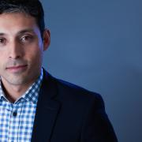
Rafael manages a team of Systems Engineers dedicated to supporting ABC. He and his team are responsible for the system architecture, automation, application support and web operations for guest facing sites like WatchABC, WatchDisney, ABC, ABC News, ABC OTV, Family, and Oscars. He enjoys the challenges of enterprise platforms, and collaborating with Engineering teams to build environments and pipelines for their applications. He's been working in the Systems Engineering field for over...
Robyn Bergeron makes life awesome for people participating in the Elasticsearch community. Passionate about improving ease of development and deployment of infrastructure and applications, she tirelessly* advocates for end-users of open source projects, which may be why her current title is "Developer Advocate." She has been a sysadmin, program manager, and business analyst, and has an ongoing role as mother to two stellar kids. Her most recent gig was as the Fedora Project Leader...

Josh Berkus spends his time messing around with containers, automation, and community-building for Red Hat Inc. Prior to that, he spent nearly two decades working on PostgreSQL. From his home in Portland, he cooks, makes pottery, and looks after a cat.
Nathan has been working with the XBMC community in one form or another since 2008. Nathan is endlessly interested in topics that relate to home entertainment, personal entertainment, and the ongoing battle for eyeballs being waged across a multitude of screens large and small.
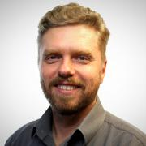
Dr. Konstantin Boudnik, Vice President of Open Source Development at WANdisco is one of the early developers of Hadoop and a co-author of Apache BigTop, the open source framework and the community around creation of software stacks for Hadoop and BigData analytics.
With 20 years of experience in software development, compilers, JVM, distributed systems, Hadoop, analytics and more, Dr. Boudnik is contributing to multiple open source projects in the storage, data processing and...
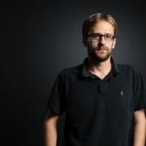
Jonathan Boulle is helping to build modern Linux server infrastructure at CoreOS. Previously, he worked at Twitter building out new datacenters and developing their cluster management platform based on Mesos. At CoreOS, Jonathan is one of the lead developers on fleet, a distributed init system for clusters, and has contributed heavily to etcd, a distributed key-value store. Most recently, he's taken a leading role in developing the App Container Specification and Rocket, the first...
Rich has been contributing to open source since before we called it that. He's a member, and board member, of the Apache Software Foundation, and works on the Apache httpd project. Rich works on the Open Source Strategy team at AWS, where he educates teams about how to do open source.
Joe Brockmeier is a long-time participant in open source projects and former technology journalist. Brockmeier has worked as the openSUSE Community Manager, is an Apache Software Foundation (ASF) member, and has been active in a number of other open source communities. Brockmeier works for Percona as Head of Community.
Jason Brooks is a software analyst with Red Hat, in the company's Open Source and Standards group. Previously, Jason spent 12 years as an analyst and editor with eWEEK Labs, testing and writing about enterprise IT, with a particular focus on Linux and open source software. Jason lives in San Francisco, California, with his wife and two sons.

Donald Burr has been using — and abusing — computers and gadgets practically since the day he was born. (Rumor has it he was born with a keyboard in one hand and a mouse in the other.) He has been involved in the Open Source community in various capacities for most of his adult life, and regularly advocates for the use of Linux and Open Source software to his various employers. Lately he's become enthused with mobile app development. When he’s not geeking around with tech, he can be...

Elijah graduated from Oregon State University in the Fall of 2017 with a degree in Computer Science and a focus in Mathematics and Security.
He has worked at the OSU Open Source Lab, CoreOS, and Nordstrom wearing hats like developer, documentarian, course teacher, and devops engineer.
Despite school he made time to present at conferences like SCALE, SeaGL, Write the Docs EU, and BeaverCat BarCamp on topics like Kubernetes, Git, Email, and Blender 3D.
In his free time Elijah...

Education Outreach team lead at Red Hat. Red Hat employee since 2001. Co-author of "Raspberry Pi Hacks" (O'Reilly, 2013). Formerly Fedora Engineering Manager, Fedora Packaging Committee Chair, Fedora Board Member, Fedora Engineering Steering Committee Member. In my spare time, I enjoy gaming, geocaching, pinball, hockey, and science fiction.

Thomas Cameron is an Open Source technologist with 27 years of experience. He's watched the information technology industry grow from PC servers and client/server architecture to distributed, to cloud computing. He's worked with technologies from Novell NetWare to Windows servers to Linux, and now the cloud. He is a senior solution architect at Amazon Web Services, and was previously a global technology evangelist at Red Hat.

Bryan Cantrill is a software engineer who has spent a quarter of a century at the hardware/software interface. He is the co-founder and CTO of Oxide Computer Company, which is endeavoring to build a rack-scale computer for the post-cloud era. Prior to Oxide he spent nearly a decade at Joyent, a cloud computing pioneer; prior to Joyent, he spent fourteen years at Sun Microsystems, a now-defunct computer company that Bryan's ten-year-old daughter apparently thought was a brewery.
Leslie Carr is a long-time network engineer who became enthralled by automation when she joined the Wikimedia Foundation. Her past experience includes Google, Craigslist, and Twitter. She is currently working at Cumulus Networks. She is a lover and user of open source and automation, and dreams of robots taking over all of our jobs one day.
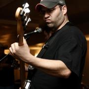
Jorge Castro is a community manager, specializing in Open Source. He is basically a cat herder - a combination of engineering, developer relations, and user advocacy. Jorge graduated with a degree in Telecommunications from Michigan State University and rode with the 11th Armored Cavalry Regiment for four years. He first entered the technology field at SAIC and then moved to system administration at the School of Engineering and Computer Science at Oakland University in Rochester Hills,...
Marco Ceppi has been an Ubuntu community member since 2011, an Ask Ubuntu moderator since 2010, and currently works on the Juju Solutions team as an Engineer for Canonical Ltd.

Alison is an automotive systems programmer and kernel engineer and has worked at Nokia, Mentor Graphics, Peloton Technology and Aurora Innovation. In 2014-2015, she collaborated on-site with a customer in Germany. Alison has spoken at events including ELC and ELCE, USENIX, LibrePlanet, linux.conf.au, Automotive Linux Summit, SCALE and Maker Faire. She lives in Mountain View , CA where she rides bikes, attends concerts, drinks beer and studies German.

Colin Charles is the Managing Consultant at GrokOpen. Previously, Colin was on the founding team of MariaDB Server, and has been around the MySQL ecosystem including being an early employee at MySQL, and worked actively on the Fedora and OpenOffice.org projects. Colin has been a MySQL user since 2000. He's well known within open source communities, enjoys building business and market entry in APAC and has spoken at many conferences.
Currently working at Fox as a Director of Technical Operations. I'm very hands on since initially it was just myself and another who were solely responsible when the reorganization occurred. I now lead a team of talented engineers that are responsible for the infrastructure for various digital properties (fox.com, foxsports.com, fxnetworks.com, simpsonsworld.com) . I recently moved back from Austin Texas after moving there a couple years ago to work at my dream company (Cisco Systems...
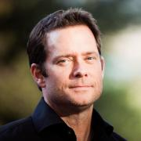
An industry veteran and pioneer in large-scale distributed systems and enterprise computing, Derek Collison has held executive positions at TIBCO Software, Google, and VMware. At TIBCO, he designed and implemented a wide range of messaging products, including Rendezvous and EMS. As TIBCO’s Senior Vice President and Chief Architect, Derek led technical and strategic product direction and delivery. He co-founded the AJAX APIs group at Google and went on to VMware to design and architect the...

Joe Conway is a technology executive with skills in a wide array of disciplines and extensive international business experience. He has been involved with the PostgreSQL community since 1998, presently as a PostgreSQL Committer, Major Contributor, and Infrastructure Team member. He is also the author and maintainer of a PostgreSQL procedural language handler for the R language, PL/R. Joe is currently Head of the PostgreSQL Contributors Team at Amazon Web Services, RDS Open Source Databases...
Ryan Cresawn is a systems administrator for the College of Agriculture and Life Sciences at the University of Arizona. He has worked as a systems administrator in the United States and Canada at colleges, universities, and research institutions. Ryan earned his B.S. at the University of Arizona. His interests include improved pedestrian, bicycle, and public transportation infrastructures, renewable energy, rain harvesting, and open source software.
Jon Cruz is a Senior Engineer at Samsung's Open Source Group. He has been working in Open Source for quite some time and shipped his first linux-based appliance in 1996. He is currently collaborating on Wayland, is a sub-maintainer with IoTivity and is an Inkscape core developer and Board Member. He has participated as a mentor in Google’s Summer of Code since its inception. Jon is an international speaker, most recently presenting at SOSCON, linux.conf.au and OSCON.

Peter is a system engineer working as evangelist at One Identity, the company behind the syslog-ng logging daemon. He helps distributions to maintain the syslog-ng package, follows bug trackers, helps syslog-ng users, and talks regularly about sudo and syslog-ng at conferences (SCALE, FOSDEM, Libre Software Meeting, LOADays, etc.). In his limited free time he is interested in non-x86 architectures, and works on one of his PPC or ARM machines.
Nate has been working in the enterprise and mobile software industry for 13 years in various capacities as a developer and product management. In recent years his technology passions have focused around areas of mobile computer vision leveraging open source tools as well as the rise of the consumerization of IT Operations. Three years ago he started Reactor8 as consulting business with a friend to handle everything from application development, architecture design to the automation/...

Lan Dang is an Operations Engineer with the Jet Propulsion Laboratory, specializing in science data systems operations and large scale data processing. She spends most of her time on the command line of various remote Linux systems. Her favorite tools are screen, awk, vim, and git. Her contributions to open source focus on community-building and evangelism. In her spare time, she is active in the San Gabriel Valley tech community as a leader of the SGVLUG and its sister group, the SGVHAK...
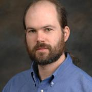
Brooks Davis is a Senior Software Engineer in the Computer Science Laboratory at SRI International and a Visiting Research Fellow at the University of Cambridge Computer Laboratory. He has been a FreeBSD user since 1994, a FreeBSD committer since 2001, and was a core team member from 2006 to 2012.
Brooks earned a Bachelors Degree in Computer Science from Harvey Mudd College in 1998. His computing interests include security, operating systems, networking, high performance computing,...
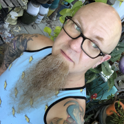
Just as at home with electro-acoustic synthesizer electronics as with site reliability engineering, I find joy in operating inherently chaotic complex systems. My expertise is a variegation of data-center operations, storage hardware, distributed databases, IT security, support services, observability systems, education, advocacy, and SRE leadership. With degrees in music performance and composition, I have a passion for exploring relationships between the artistic mind and the operation of...
Owen DeLong is a Senior Manager of Network Architecture at Akamai Technologies and a member of the ARIN Advisory Council. Owen brings more than 30 years of industry experience. He is an active member of the systems administration, operations, and IP Policy communities. In the past, Owen was an IPv6 Evangelist at Hurricane Electric and has worked at Tellme Networks (Senior Network Engineer), Exodus Communications (Senior Backbone Engineer) where he was part of the team that took Exodus from a...
Michael has used BSD Unix systems since January of 1991 and provides BSD and ZFS support at Gainframe. He has supported BSD through download mirrors, events and organizations for over a decade and in his spare time edits Call For Testing, a BSD technical journal. Michael lives with his wife, daughter and son in Portland, Oregon.

I am the lead consultant for Command Prompt, Inc.. I am also a Director for United States PostgreSQL and Software in The Public Interest. A Linux and PostgreSQL expert, I have been doing this Open Source thing for 20 years (Yes, really.). A Major PostgreSQL contributor, I have spent the majority for the last 15 years focusing on delivering PostgreSQL based solutions to the wider market.
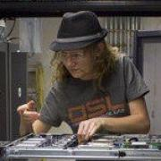
edunham is inspired by a childhood dream of replacing humans with shell scripts, and has found that Linux systems administration is the best career field for realizing that goal. Hobbies include travel, gardening, drive-by patches to obscure open source projects, and filng issues against public repositories that lack licensing information.

Damon Edwards is a Co-Founder of Rundeck Inc., the makers of Rundeck, the popular open source Self-Service Operations platform. Damon has spent over 20 years working with both the technology and business ends of IT Operations and is noted for being a leader in porting cutting-edge DevOps techniques to large-scale enterprise organizations. Damon is a frequent conference speaker and writer who focuses on DevOps, SRE, and Operations improvement topics. Damon is active in the international...
Rikki Endsley is an editor and community architect for Opensource.com. Previously she worked as a community evangelist on the Open Source and Standards team at Red Hat. Other hats she has worn include: tech journalist; community manager for the USENIX Association; associate publisher of Linux Pro Magazine, ADMIN, and Ubuntu User; and managing editor of Sys Admin magazine and UnixReview.com.

Ron Evans is an award-winning software developer and expert in robotics/IoT/computer vision who is very active in the free and open source community. He has helped clients such as AT&T, Intel, and Northvolt solve some of their most difficult technical and business problems.
Ron has spoken at conferences such as MakerFaire, OSCON, GopherCon, FOSDEM, and the MIT Technology Review. He has been profiled in the press by Wired, Fast Company, and The New York Times. Ron has published...
Mark Fasheh is a Linux kernel developer working for SUSE Labs on file systems. He has over a decade of kernel development experience, mostly in the area of file systems. At SUSE, Mark is a key member of the group responsible for bringing btrfs to SLE12, which included much bug fixing, adding features, and improving performance. Before his work as a professional developer, Mark helped found the UCLA Linux Users Group.
VLC developer and VideoLAN treasurer.
Markus Feilner is a senior Linux specialist from Regensburg, Germany. Since spring 2015 he works as team lead of SUSE's documentation team. He has been working with Linux since 1994, and since the late 90ies as a Linux professional. Along with authoring several books on IT Security and collaboration, he has written lots of training material for university use and worked as trainer and senior IT consultant. From 2007 to 2015 he was employed as a journalist at Linux-Magazin Germany, since...
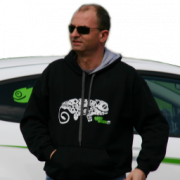
Bruno is born when computers were still weighed in tons, and punch cards the favorite media.
He fell in love with computers in 1991, experimenting first with DOS, Netware, OS/2 & Windows.
He started his consultancy career in 1996, and since 1998 is established in Switzerland (Jura) where he co-founded Ioda-Net Sarl with Françoise Wybrecht.
He has always had a strong interest in free software and the open source movement, and finally escaped from using proprietary...
Husband, Technologist, Entrepreneur, Hacker and General Human. Searching for the meaning of life through science and technology.
Richard Gaskin is the owner of Fourth World Systems, a software design and development consultancy in Los Angeles. Since founding the company in 1994, he's developed dozens of commercial and open source applications used by a wide range of organizations, including FedEx, AOL, the US Library of Congress, and thousands of hospitals and universities around the world.
Although he started his career with Mac OS, Richard has since delivered applications for Irix, every version of...
Jeff has worked with free software since the mid-1990s and has practiced the discipline of large-scale network management since 2000. His current role as Principal Technical Product Manager at The OpenNMS Group lets him continue both these pursuits.

Amber began her personal journey into open source in 2009, when she began blogging about her experiences with Ubuntu, filing bugs, organizing and speaking at various Linux events, and more. Amber insists that the days of “by the techie for the techie” in Linux and open source are gone and encourages anyone who wants to contribute to a project to do so.
Amber is a co-author of the Official Ubuntu Book and a technical reviewer of Art of Community and has written for other publications...
Jenn Greenaway is an early education specialist and open source enthusiast who studied child development at Moorpark College and The University of La Verne. A member of the Mentor Teacher Program in the state of California, she currently works with infants, toddlers, and the adults who hope to become teachers in the near future. She lives in Thousand Oaks with her husband, pets, and computers.
Brendan Gregg is a senior performance architect at Netflix, where he does large scale computer performance design, analysis, and tuning. He is the author of Systems Performance published by Prentice Hall, and received the USENIX LISA Award for Outstanding Achievement in System Administration. He has previously worked as a performance and kernel engineer, and has created performance analysis tools included in multiple operating systems, as well as visualizations and methodologies.
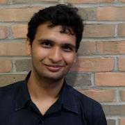
I am currently a student at University of Michigan, Ann Arbor pursuing Masters in Information studying data analysis and inferring the data. I am also interested in how our lives are affected by changes on the internet. I contribute to the openSUSE Project during my free time.

Michael Hall is an open source software developer, community manager and technology evangelist. He has extensive experience in developing desktop and web-based software in a large variety of languages and frameworks, and contributes to a number of open source projects and communities. He currently works at The Linux Foundation, as a community manager and developer advocate for the EdgeX Foundry project.
der.hans is a Free Software, technology and entrepreneurial veteran. He is a repeat author for the Linux Journal with his article about online privacy and security using a password manager as the cover article for the January 2017 issue.
He is chairman of the Phoenix Linux User Group (PLUG), BoF organizer for the Southern California Linux Expo (SCaLE) and founder of the Free Software Stammtisch.
He presents regularly at large community-led conferences (SCaLE, SeaGL, Tux-Tage,...
John 'Warthog9' Hawley led the system administration team on kernel.org for nearly a decade, leading a team including four other administrators. His other exploits include working on Syslinux, OpenSSI, a caching Gitweb, and patches to bind to enable GeoDNS. He's the author of PXE Knife, a set of interfaces around common utilities and diagnostics tools needed by an average systems administrator, as well as SyncDiff(erent) a state-full file synchronizer and file transfer...
Christian has been involved in the Free Software community since the late 90's. He has worked on a wide range of desktop and server technologies for GNU/Linux. He worked on Gtk+ based applications while at VMware and Red Hat and contributes to GNOME and associated technologies. He is also the author of the official MonogoDB C driver.
In the summer of 2014, Christian quit his job to build a new IDE for the GNOME desktop, called Builder.
Oscar is a founding principal of KnowledgeSource Solutions, Inc. His technology vision more than complements all functional areas, it drives effective business process redesign and engages appropriate and successful service providers across all areas of the client's organization. Oscar designs and develops technology strategy, architecture, integration and analytics for KnowledgeSource clients. He manages technology teams at the client and vendor level. He is responsible for new...

Jason Hibbets is a senior community architect at Red Hat which means he is a mash-up of a community manager and project manager designing programs for people to participate in communities. His current role involves building community interest for #EnableSysadmin--a watering hole for system administrators. He is the author of...
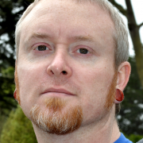
Tim is a Senior Staff Software Engineer in Google's Cloud Platform team. Over his 10+ years at Google he has worked on a number of layers in the stack, including hardware, BIOS, kernel, machine management, cluster node management, and most recently he helped kick off the Kubernetes project. Before Google he was a software engineer at Cobalt Networks, and then Sun Microsystems.
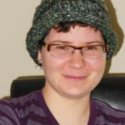
Frances Hocutt is the founding president of the Seattle Attic Community Workshop, Seattle’s first feminist hackerspace/makerspace. She prefers elegance in her science and effectiveness in her art and is happiest when drawing on as many disciplines as she can. A former chemist, Hocutt has recently jumped into F/OSS development with work around the MediaWiki web API and the Dreamwidth journalling platform. Her current passion is making it possible for other people to create the space, tools,...

Dan Hopkins is the Directory of Engineering at VictorOps. He likes talking scala, distributed systems and as a Rochester native, garbage plates. At LambdaConf 2014 (http://www.degoesconsulting.com/lambdaconf/), he spoke about how you can’t have a clusterf*ck without a cluster and at Boulder Startup Week, he won over the crowd with his talk, Actor Basics in Big Data. When he’s not getting nerdy or laughing loudly, you can find him...
Nikita Ivanov is founder of Apache Ignite project and CTO of GridGain Systems, started in 2007. Nikita has led GridGain to develop advanced and distributed in-memory data processing technologies – the top Java in-memory data fabric starting every 10 seconds around the world today.
Nikita has over 20 years of experience in software application development, building HPC and middleware platforms, contributing to the efforts of other startups and notable companies including Adaptec, Visa...
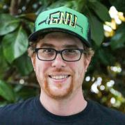
Ryan Jarvinen is a Developer Advocate at Red Hat, focusing on improving developer experience in the cloud native community. He lives in Sacramento, California and is passionate about open source, open standards, open government, and digital rights.
For the past 16 years Carl Johnson has been keeping networks and systems fast, stable, and secure at companies such as Yahoo!, YP, Dreamworks Animation, and now OpenX. At OpenX he helps manage the Technology Operations department where a relatively small team is able to maintain and continually improve an architecture spanning multiple worldwide datacenters and hundreds of thousands of requests per second. Carl is always interested in applying open source software towards high scale and its...
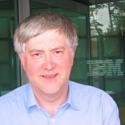
Adam Jollans is currently leading the worldwide cross-IBM Linux and open
virtualization strategy for IBM. In this role he is responsible for developing and
communicating the strategy for IBM’s Linux and KVM activities across IBM, including
systems, software and services.
He joined IBM in 1984, and since then has worked in a range of technical, sales and
marketing roles - most of them associated with PC and small systems hardware and
software. During his...
Ski Kacoroski has been as system admin since 1982. He currently works as a system admin at the Northshore School District and is a Director of the League of Professional System Administrators. When not working, Ski enjoys making his urban farm more self-sufficient, participating in King County Explorer Search and Rescue, and hiking in the Cascades.

Avni Khatri is Sr. Director of Education in GitHub's Developer Relations organization, helping learners access the tools and resources they need to successfully build software products. Avni is passionate about working with learners and educators of all kind to make coding available to the next generation of developers around the globe. She also volunteers with Internet-in-a-Box.
__q_itok=__z-_z-E.jpg)
Andrew D Kirch is employed by the Marketing Department at Zenoss, a software development company specializing in Network Monitoring and Management with 180 employees, headquartered in Austin Texas. The company offers an open source Unified Monitoring product called Zenoss Core, and a commercial product including Impact and Analytics, with 35,000 users in over 180 countries.
Andrew is the Community Manager at Zenoss, working with users of Zenoss every day. He has over 10 years of...

Dustin Kirkland is Canonical's Cloud Solutions Product Manager, leading the technical product strategy, road map, and life cycle of the Ubuntu Cloud commercial offerings.
Formerly the CTO of Gazzang, a venture funded start-up acquired by Cloudera, Dustin designed and implemented an innovative key management system for the cloud, called zTrustee, and delivered comprehensive security for cloud and big data platforms with eCryptfs and other encryption technologies.
Dustin is...

I'm a systems engineer who has been using Linux since 2001. I currently wrangle servers and developers at Stripe, wrangle 2 cats and a corgi at home, and spend my spare time wandering around Portland taking pictures of cats.
Koda Kol is IT Professional and Educator.
Yolanda Kol is an educator based in Los Angeles, CA. Her mission is focused on ensuring academic opportunities to overcome the achievement gap by bridging the digital divide. Topics of interest include: open-source educational resources, women in technology, and the impact of technology in employment and higher education.
Kirk is a long time Linux user and has been working professionally with Linux for over 10 years in various roles including support, systems administration, and now as a site reliability engineer at Blizzard Entertainment. He is a committer on the Apache CloudStack project, and has previously presented at several open source conferences, including SCALE and ApacheCon, and at Meetups.
Charlie worked on Ubuntu Linux for 5 years as a volunteer. He kept the accessibility wiki up-to-date, as well as triaging bugs. As a member of the Ubuntu BugSquad, he also served as head of Quality Assurance for Xubuntu. In May of 2010 he accepted the position of Xubuntu Project Lead for 18 months. He was the first non-developer to head the team. He presented several sessions for Ubuntu Open Week and Ubuntu Developer Week, and the Ubuntu Developers Summit. Since October of 2011, he has...

Jason Kridner is a software architecture manager for embedded processors at Texas Instruments Incorporated (TI). A 25-year veteran of TI, Kridner is also a founder of the BeagleBoard.org Foundation, maintainer of open-source development tools such as BeagleBoard, -xM, -X15, BeagleBone, Black, Blue, and the new ultra-tiny and ultra-low-cost PocketBeagle. Kridner participates in numerous coding and open-source mentoring/education efforts, including serving as an administrator for BeagleBoard....
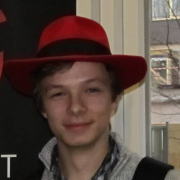
Levente is a systems software engineer, currently studying at Imperial College London for his bachelor degree, as well as working on low-level performance of mission critical systems in Chicago. Previously, he interned at Apple and at Red Hat, working on operating systems. An avid computer enthusiast, he created his own UNIX-like operating system kernel from scratch, capable enough to run GCC and various well-known utilities. His other interests include spreading the spirit of the Open...
Director of Operations at PandaStrike.com, a consultancy focused on rich client, high-performance Web and mobile experiences and lightweight solutions for big data, focused on CoffeeScript, Node.js, and a stack of innovative open source technologies. Organizer of the HackNight.LA and CoffeeScript.LA meetups. Co-developer of the "readis" ruby gem for "Redis activity monitoring and data inspection" https://github.com/...
Corey Leigh Latislaw (http://www.coreylatislaw.com) co-founded a food tech start-up, Bushel (http://www.bushel.me), that makes hyper local food accessible and social. She runs an Android and full-stack consulting firm, Green Life Software Development. She is the founder and organizer of the Philadelphia Google Developer Group and serves as Director of Operations on the Board of Kids on Computers. Corey is...
Intending to become a programmer, Dustin got sidetracked and spent more time than he cares to admit doing theoretical physics and mathematics with no relevance to software. He's better now.
Some little-known facts about Dustin Laurence:
He first used a computer playing Colossal Cave Adventure and the
bootleg Fortran IV version of Zork over a glass teletype and an
acoustic modem.
His first good programming language was C. He lies and...
Dru Lavigne is the Community Manager of the PC-BSD project and the lead documentation writer for the PC-BSD and FreeNAS projects. She is author of BSD Hacks, The Best of FreeBSD Basics, and The Definitive Guide to PC-BSD. She is founder and current Chair of the BSD Certification Group Inc., a non-profit organization with a mission to create the standard for certifying BSD system administrators, and serves on the Board of the FreeBSD Foundation.

Gina Likins has been working in internet strategy for more than 20 years, participating in online communities for nearly 25, and working in open source for more than three. Back in 1994, she presented her first talk about the internet, called "Netiquette: How to avoid getting flamed online," and she's spent the intervening time developing her own theories about how and why communities go sour (or conversely, grow strong).
Aside from her interest in the internet,...

Peter Linnell is a Sr. System Engineer for SUSE. He has fifteen plus years of experience in open source projects, as a founder, project leader and most recently a member of the openSUSE Community Board. Before joining SUSE, he worked in Software Engineering at Cloudera - the Hadoop Big Data startup in Silicon Valley. Prior to returning to the US, he spent almost a decade living in Europe in the UK and France. While in France, he was a project manager at INRIA (National Institute for Research...
Stephanie is President / Linux Consultant at VCT Labs, an Engineering Services company composed largely of long-time Linux enthusiasts, some of whom are also long-time SCALE participants. Stephanie has attended and greatly enjoyed every single SCALE thus far, and after several stints of volunteering at various booths (SBLUG, Gentoo, and WebOS Ports to be specific), it's time for a turn at the speakers podium, taking this opportunity to share some embedded Linux experience acquired over...
Israel "Izzy" Lopez is a life long Technology Enthusiast living in Southern California. Israel operates a boutique ERP Consulting firm servicing companies in the United States, Canada and Australia. Israel has been tinkering with Linux since RedHat 9, and recently his favorite distribution is Ubuntu. Israel contributes to Open Source software on GitHub, and is active on StackOverflow. Israel's latest community project was building and deploying a computer lab in Malawi,...

Federico Lucifredi is the Product Management Director for Ceph Storage at Red Hat and a co-author of O'Reilly's "Peccary Book" on AWS System Administration. Previously, he was the Ubuntu Server product manager at Canonical, where he oversaw a broad portfolio and the rise of Ubuntu Server to the rank of most popular OS on Amazon AWS. A software engineer-turned-manager at the Novell corporation, he was part of the SUSE Linux team, overseeing the update lifecycle and...

Bryan Lunduke writes books about Linux. Then he writes articles about Linux. Also podcasts about Linux. Rumor has it he also does marketing work related to Linux. Linux, Linux, Linux. Plus Linux.
Having had his parents murdered before his eyes, as the family was going to the theatre, young Jess dedicated his life to fight crime.
He now works as a systems administrator.

Don Marti has written for Linux Weekly News, Linux Journal, and other publications. Don co-founded the Linux and web consulting firm Electric Lichen, which he and business partner Jim Gleason later sold to VA Linux Systems. Don has served as president and vice president of the Silicon Valley Linux Users Group and on the program committees for Uselinux, Codecon, and LinuxWorld Conference and Expo. He was a key organizer for Windows Refund Day, Burn All GIFs Day, FreedomHEC, and the movement...
Mark Maun is an engineering director for the Ticketmaster platform. His teams focus on delivering self-service solutions that promote a well-oiled software factory. This includes service-templates, build pipeline tools, code repositories, coverage analysis solutions, automated testing and monitoring solutions. At Ticketmaster, Mark has transformed over 30 engineering teams from a siloed waterfall structure to a devops model advocating self-service production deployments, CI practices...
An open source security specialist, David has over 20 years of experience as an open source user and
developer, and he is particularly active in the NetBSD community. He currently sits on the advisory board for the BSD Certification
Group and the program committee for the annual BSDCan conference. He was also a NetBSD Security Officer from 2001-2005, on the NetBSD Foundation Board of Directors 2009-2011 and a contributor to the best-selling O'Reilly title "BSD Hacks....
After several years in Japan, Justin Mayer now designs and builds software products in Santa Monica. He is an active open-source contributor and the primary maintainer of Pelican, a popular static site generator.
Danny is a software developer and a part-time community college mathematics instructor. He has been using Linux as his main desktop operating system since he was in high school.
Though his primary job is writing web applications in Java, he is also familiar with C/C++, Python, and a mix of other languages. He has written everything from web applications and GUI programs to mathematical software and and system utilities.
His work experience varies widely, covering everything...
Mark McClain is the Chief Technical Officer of Akanda Inc, a member of the OpenStack Technical Committee and a core reviewer for several teams (Neutron, Requirements and Stable). Mark was the Program Technical Lead for the OpenStack Networking during the Havana and Icehouse cycles. In addition to his technical work, Mark is co-organizer of the Atlanta OpenStack Meetup group and frequent speaker on OpenStack. Formerly of DreamHost and Yahoo!, he has 14 years of software development...
Ian joined Red Hat in 2001 as part of the Global Professional Services team. For the next decade he worked on site at a variety of large customers, primarily focusing on Unix to Linux migrations. He has worked in Red Hat Engineering since 2010 with a focus on system image creation and customization for virtual, cloud and container environments. He's a member of the Fedora Cloud SIG and the upstream lead for the Image Factory disk image creation project.
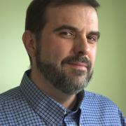
Michael Merideth has worked with GNU/Linux and Open-Source Software since the mid-1990's. He's been part of several startups in the Denver/Boulder Colorado area, creating large-scale distributed platforms for ISPs, collaboration and conferencing companies, and high-volume ad platforms. Now Senior Director of IT at VictorOps, Mike finally has his dream job, helping make on-call suck less for Ops professionals everywhere. At VictorOps, Mike has expanded on his long-time interest...
Max Mether, a native of Finland received his M.Sc (Eng) in Physics and Maths from Helsinki University of Technology. Max joined MySQL in 2001 starting as a Consultant and an Instructor, where he ended up creating the MySQL training program and managing the curriculum under MySQL Ab and later at Sun. As a co-founder Max now manages the training department at SkySQL and helps advance the MySQL eco-system around the world. Max is a frequent speaker at LinuxFests and MySQL conferences around the...
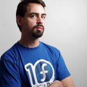
Matthew is the Fedora Project Leader and chair of the Fedora Council. Previously, he created the Boston University Linux distribution, and was a sysadmin at BU and Harvard, and has been involved with Fedora to varying degrees since its inception.
Jim has more than 15 years of experience developing data intensive applications and infrastructure. Jim is the CTO of the Open Source Consulting Group focusing on the intersection of BigData and PostgreSQL. Prior to joining OpenSCG, Jim was CEO at StormDB a Postgres-XC scalable public cloud solution. Prior to StormDB, Jim was Chief Architect at EnterpriseDB, leading EnterpriseDB’s technology direction across EnterpriseDB’s cloud offerings and multiple product lines. Jim also is active in the...
Bruce Momjian is co-founder and core team member of the PostgreSQL Global Development Group, and has worked on PostgreSQL since 1996. He has been employed by EDB since 2006. He has spoken at many international open-source conferences and is the author of PostgreSQL: Introduction and Concepts, published by Addison-Wesley. Prior to his involvement with PostgreSQL, Bruce worked as a consultant, developing custom database applications for some of the world's largest law firms. As an...
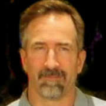
Rick Morris began creating database-driven web applications in 1997, and has been heavily involved in both technologies ever since. He has created or assisted in applications including e-commerce, electronic banking, geographical information systems and document management. Since 2012 he has worked with KSS, Inc. to provide PostgreSQL-based consulting to some America's largest companies.
Deb Nicholson is a free software policy expert and a passionate community advocate. She is the Director of Community Operations at Software Freedom Conservancy where she supports the work of its member organizations and facilitates collaboration with the wider free software community. Formerly, she has served as the Community Outreach Director for the Open Invention Network, a shared defensive patent pool on a mission to protect free and open source software and the Membership Coordinator...
Kelley is a relatively new kernel developer, who is learning under the excellent guidance of mentors through the Gnome Outreach Program for Women. She is also a co-coordinator for Codechix, which organizes in-person events of all kinds for women and everybody. Before settling on the kernel, she wrote a collection of Linux screen saver demos, aptly titled Xtra Screen Hacks, and a few Android apps. She blogs at http://www.salticidoftheearth.com...
Sarah Novotny has long been an Open Source champion leading in projects such as Kubernetes, OpenTelemetry, NGINX and MySQL. She has previously led an Open Source Ecosystem team from the Microsoft Azure Office of the CTO, an Open Source Strategy group at Google and represented both Microsoft and Google on the Linux Foundation Board of Directors. In the distant past, she ran large scale technology infrastructures before web-scale had a name.
Sarah’s 20+ years of expertise extends...
John O’Connor is the Co-Founder and CTO of CardBlanc, Inc, a mobile virtual payments and shopping platform. John is an experienced software engineer, serial entrepreneur, and public speaker. He is also an associate professor of computer science at Norco college and a Front-end Web and Android development mentor for Bloc, Inc.
John began his career as a web developer in 1999 and worked as a freelancer for several years before earning a B.S. in Computer Science from California State...

I'm an SRE manager working on deploying scalable solutions for The Walt Disney Company. Previously I worked at DreamWorks Animation where I supported the render farm, core systems team, and new business initiatives. Making it easy to run applications well by providing a paved road w/ best practices built in.
Find me on Twitter @dontrebootme
Sean OMeara has been a systems administrator since he was old enough to type. He's gave up his pager a few years ago and has been mostly consulting ever since. He currently manages Chef public cookbooks.

Adrian serves as a Distinguished Architect at Rackspace. He is an active technical contributor to OpenStack, the chair of the OpenStack Containers Team, and PTL of OpenStack Magnum. In his free time he serves as a coordinator for the Docker Los Angeles Meetup group. Adrian is passionate about next generation cloud technology, and believes that true collaborative development is significantly more powerful than individual companies working in isolation.
See also:
...

A Linux user since 1995 and a long-time Open Source advocate, Russ has spoken over 100 times at Open Source events. He was an Open Source columnist for magazines (Infoworld, Processor), author of one of the earliest books on Open Source, and a weekly panelist on the long-running website "The Linux Show". Until recently an evangelist for the Xen Project for Citrix, Russell is currently looking for a new position. He has a passion for conveying the heart of Open Source: a movement...
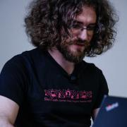
Jerome is a senior engineer at Docker, where he helps others to containerize all the things. In another life he built and operated Xen clouds when EC2 was just the name of a plane, developed a GIS to deploy fiber interconnects through the French subway, managed commando deployments of large-scale video streaming systems in bandwidth-constrained environments such as conference centers, operated and scaled the dotCloud PAAS, and various other feats of technical wizardry. When annoyed, he...

Stormy Peters leads the Community Leads team at Red Hat. Previously at SCALE she has given the "Would you do it again for free?" keynote as well as several talks on community management.
Stormy is passionate about open source software and educates companies and communities on how open source software is changing the software industry. She is a compelling speaker who engages her audiences during and after her presentations.
Before joining Red Hat, Stormy was VP of...

Christophe has been working with PostgreSQL since 1997. He is the CEO of PostgreSQL Experts, Inc.
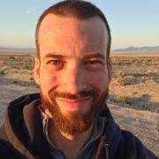
Developer at SaltStack; runner of mountains; grower of beards; drinker of beer. Likes open souce. Hates meetings.

People person, technology enthusiast and all-things-open evangelist. I have managed and marketed communities for more than a decade, getting started in the KDE community, followed by working as openSUSE Community Manager at SUSE and co-founded Nextcloud. At Nextcloud I head up our marketing efforts, writing, speaking at and organizing...

Matt Porter is the CTO of Konsulko Group, working on the design and development software for embedded Linux based systems. Matt specializes in the Linux kernel and associated FOSS middleware that provides the plumbing for applications. Outside of work he hacks on various random Linux kernel drivers and subsystems. Matt has spoken at previous conferences on the topics of userspace drivers, Android, Linux 6502 remote processors, kernel testing, USB gadget configfs, kernel upstreaming, and...
Raghavendra Prabhu is the Product Lead of Galera-based Percona XtraDB Cluster
(PXC) at Percona. He also works on Xtrabackup and Percona Server intermittently.
He joined Percona in the fall of 2011. Before joining, he worked at Yahoo! SDC,
Bangalore for 3 years as Systems Engineer, primarily dealing with databases
(MySQL and Yahoo Sherpa/PNUTS) and configuration management.
Raghavendra's main interests include databases, virtualization and containers,...

Brian Proffitt is currently the Senior Manager, Community Outreach team for Red Hat's Open Source Program Office. A long-time member of the free and open source software community, Brian is the author of several books on Linux, iOS, and other odd operating systems, as well as former technology journalist from ReadWrite, ITworld, LinuxPlanet, and Linux Today.
Corey is the Chief Cloud Economist at The Duckbill Group, where he specializes in helping companies improve their AWS bills by making them smaller and less horrifying. He also hosts the "Screaming in the Cloud" and "AWS Morning Brief" podcasts; and curates "Last Week in AWS," a weekly newsletter summarizing the latest in AWS news, blogs, and tools, sprinkled with snark and thoughtful analysis in roughly equal measure.
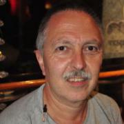
Programming since 1976, professionally since 1980, having worked in a software house for civil engineering software (1980-1984), multi-user application software on mini-computers (DG Nova 2/3, Unix/Xenix/Oasis, 1984-1986), PC based CAD/CAM software (1987-1996), then one year as sys admin for a auto parts retailer including Siemens mainframe, since 1997 IT service consultant here in Los Angeles, since 6/2011 with my own IT service company, since then also going back into software developement...

Kyle Rankin is a security and infrastructure expert with over two decades of professional Linux experience. He is the author of How To Write A Tech Book, The Best of Hack and /: Linux Admin Crash Course, Linux Hardening in Hostile Networks, DevOps Troubleshooting, The Official Ubuntu Server Book, Third Edition, Knoppix Hacks, 2nd Edition, and Ubuntu Hacks, among other books. Rankin was an award-winning columnist and tech editor for Linux Journal, and speaks frequently on Free and Open Source...
22-year old guy who is currently a Sr. Developer Support Engineer for Auth0, and member of the Ubuntu Community Council. Actively participating on the Ubuntu Project, loves photography and food.

Gabrielle Roth has been using Postgres since sometime in the version 7s, and thinks that the best part of using Open Source software is the culture of sharing knowledge. She's a co-founder and former co-lead of PDXPUG.
Ken Rugg, Founder, CEO & Board Member at Tesora, Inc.. Ken has over 20 years in the database management industry. Before founding Tesora, Ken was the senior vice president and business unit general manager at Progress Software for the company's enterprise software products. Ken joined Progress when his previous company, eXcelon, a leader in Object and XML data management, was acquired. At eXcelon, Ken was a chief technology officer and vice president of product development. ...
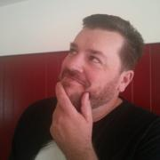
Clint currently works for Red Hat on the Continuous Infrastructure team. He's previous work included The Linux Foundation, an independent Linux consultant, trainer, developer, and community organizer.
In 2006, Clint founded the Utah Open Source Foundation and Utah Open Source Conference (now called OpenWest) to help grow Free and Open Source Software in Utah and the Mountain West. The conference and community have grown consistently every year.
Baron is the founder and CEO of VividCortex, the best way to see what your production database servers are doing. He is the author of High Performance MySQL and many open-source tools for MySQL administration. He's also an Oracle ACE and frequent participant in the PostgreSQL community.
Kara Sowles is Community Initiatives Manager at Puppet Labs, where she joyfully plans podcasts, encourages Puppet's growing user group program, and travels to events. After working at Puppet Labs during the day, she enjoys going home and making stop motion animation using real puppets. The irony is not lost on her.
Many years ago amongst the snow drifts and tundra of the great frozen north, Michael Starch earned his Bachelor’s degree in Computer Engineering from the University of Michigan. Leaving his beloved homeland behind, he started a career at NASA's Jet Propulsion Laboratory in sunny Pasadena. He has remained there ever since working as a developer, operator, engineer, and open source community manager on a myriad of projects and missions. He also mentors at San Marino High School on Fridays....
Dave Stokes is an open-source software and database fan. He has worked at companies ranging alphabetically from the American Heart Association to Xerox, has three college degrees, enjoys riding his Honda Goldwing motorcycle, lives in North Texas, and started with UNIX in the Version 7 days. He is the author of MySQL & JSON - A Practical Programming Guide, which is available at Amazon.com
Ruth Suehle manages the Community Leadership team in Red Hat's Open Source and Standards group, which supports upstream open source software communities. She also leads the Fedora Project's marketing team and is co-author of Raspberry Pi Hacks (O'Reilly, Dec. 2013). Previously an editor for Red Hat Magazine, she now leads discussions about open source principles as a moderator at opensource.com...

John Sullivan is an independent free software activist and consultant, with specialties in communication, community organizing, licensing, fundraising, strategic planning, and nonprofit governance. He is a Debian Developer, and member of its keyring team. Previously, he worked for the Free Software Foundation for over nineteen years, including two as its union steward and eleven as its executive director. Prior to the FSF, John worked as a speech and debate instructor for Harvard,...
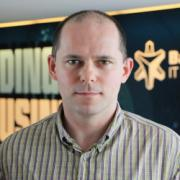
István Szabó is the product owner of syslog-ng and syslog-ng Store Box. The syslog-ng delivers the log data critical to understanding what is happening in your IT environment and syslog-ng Store Box (SSB) is a high-reliability log management appliance that builds on the strengths of syslog-ng. His main duty is to create a vision and strategy and making sure it is followed. He is responsible for coordinating marketing, sales, support and development efforts and act as the face of the product...
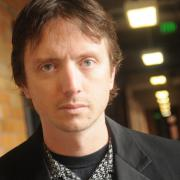
Monty is a long time Free Software Hacker and a Distinguished Technologist at HP. He is founder and currently a core team member of the OpenStack Infrastructure program which runs OpenStack's massively scalable dev/test and CI system. You should never let him name projects, because if you do, you'll end up with something like "jeepyb" or "TripleO". Before OpenStack he was a MySQL consultant and a core dev on the Drizzle fork of MySQL. Outside of technology,...
Look, I've been doing this for a long time and I hate people waking me up because something broke. Anyone with sense pays me to make sure nothing breaks --from a user perspective-- and everyone else pays me to reboot things that are broken and [re]install things when they're not. I've learned some things along the way about what's about breaky and less-breaky so listen or learn it yourself, your call. Postgres and FreeBSD top my favorites list, though I'll give...
Robinson has over a decade of experience in FOSS development, organization, & outreach, with an emphasis on Serious Games in medicine, security, & higher education.
Currently serving as the Director of Open Source Strategy at the LOT Network, he was the Senior QA Engineer for The Document Foundation, the German non-profit behind LibreOffice & DLP, as well as coordinator of community outreach & education. At the Interactive Media Lab at the Geisel School of Medicine, he...
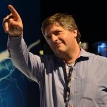
John Mark Walker is an open source product, community and ecosystem expert. He has spoken at numerous conferences on the subject of open source community, governance and business. He’s a well-respected pundit for opensource.com and linux.com and recently founded the Open Source Entrepreneur Network at https://osenetwork.com/
He works for Arm helping open source developers work with the Arm architecture and ecosystem.
Sage Weil is the creator of the Ceph project. Sage originally designed Ceph as part of his PhD research in Storage Systems at the University of California, Santa Cruz. Since graduating, he has continued to refine the system with the goal of providing a stable next generation distributed storage system for Linux. Sage is a co-founder of DreamHost and as a teenager he created and sold WebRing.
Originally from Canada, John has spent much of his career designing and building software at a handful of startups, at Sun Microsystems, NeXT Inc., and more recently in the smart grid and energy space. His biggest passion is for developer tools, or more generally any tool, language, process, or system that improves developer productivity and quality of life. Without question, Stackato is one such tool and the reason why he is here. No stranger to technology evangelism, John spent several...

John Willis has worked in the IT management for over 40 years. He is researching DevOps, DevSecOps, IT risk, modern governance, and audit compliance. Previously, he was an Evangelist at Docker Inc., VP of Solutions for Socketplane (sold to Docker) and Enstratius (sold to Dell), and VP of Training & Services at Opscode, where he formalized the training, evangelism, and professional services functions at the firm. Additionally, Willis founded Gulf Breeze Software, an award-winning IBM...
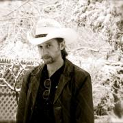
Nate Willis is a typeface designer and consultant who has been an active member of the free-software community for longer than he cares to remember. He currently develops open-source fonts, works on type-related free-software projects, and advocates for open standards in font development and publishing. At least, by day. By night, he works with the libre graphics community and helps organize Texas Linux Fest, a community open-source event in Texas.
In years past, he wrote and edited...
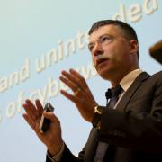
Chester "Chet" Wisniewski is a Senior Security Advisor at Sophos with more than 15 years experience in the security industry. In his current role Chester conducts research into computer security and online privacy with the goal of making security information more accessible to the public, media and IT professionals. Chester frequently writes articles for the award winning Naked Security blog, produces the weekly podcast "Sophos Security Chet Chat" and is a frequent...

Mark Wong is a Software Development Engineer at EDB and is a PostgreSQL Major Contributor. He first introduced himself to the PostgreSQL community in 2003 with open source benchmarking kits and performance data. Since then, he has continued to contribute to various aspects of the community such as a Google Summer of Code mentor, Conference Organizer, Portland PostgreSQL Users Group Co-Organizer, PostgreSQL Fundraising Group Member, and a Director on the Board of the United States PostgreSQL...
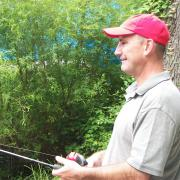
Keith Wright has been working with Linux since 1993. Currently, he teaches courses in Linux, Perl, Python, Project Management, and Web Development for One Course Source. He is A+, Linux+, Security+ and Network+ certified, as well as he was formerly certified as a RHCE. Besides developing for the front-end and back-end of websites, he also publishes Android applications on the Google Play market as WrightRocket.
Rae Yip is a service reliability engineer at Sony Gaikai, a subsidiary that runs Sony Computer Entertainment's "Playstation Now" cloud videogame streaming service. His previous jobs include keeping the servers that detect earthquakes for SoCal running at Caltech Seismo Lab, and maintaining www.cisco.com. His interests include scaling online services, videogames, analyzing data with SciPy, and Tuvan throat-singing.
Dan Yoder brings over thirty years of experience in all aspects of the software business. He's created or contributed to a variety of popular open source projects and given numerous talks on everything from building hypertext APIs in Ruby to load testing with Node.js. He's the co-organizer of the CoffeeScript.LA meetup and the Chief Panda at PandaStrike.com, a consultancy focused on rich client, high-performance Web and mobile experiences and lightweight solutions for big data,...